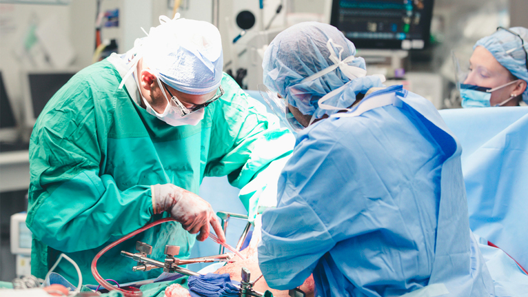

Social Cause
Organ Donation

Credit: Nageleisen, Amanda. UC Health. Feb 4. 2020.
Organ donation is a processs in where a organ is donated to a person who needs the organ because one of their organ is failing and the only option is a organ transplant. Healthy people can choose to donate certain organs when they are alive such as a kidney, since people are able to live with just one kidney. A small portion of the liver can also be donated, since the liver is able to grow back. In order to be able to donate a organ a person must be over 18 years old and register to be a donor and a driver license is needed to fill out the form. However if depends on the state that the person lives in. A Organ Procurement Organiztion checks the person's status regarding if they register to donate their organs and they also contact the organ Procurement and Transplantatiom Network(OPTN).
Some Organs or tissuses that can be donated are listed below:
-Heart
-Liver
-Kidney
-Lungs
-Corneas
-Bone marrow
Websites to look into if you want more information
Sign up to be an Organ Donor | Organdonor.gov
Become an Organ Donor | NY.gov
Organ Donation Facts | NYP.org